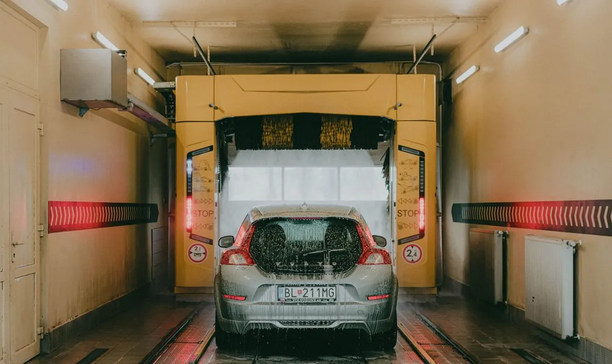

Au Petro-Canada Boni-Soir, le lave-auto sans contact nettoie votre véhicule sans brosses qui frottent la peinture. Il est situé au 1149, boul. Saint-Antoine, à Saint-Jérôme — la station vedette du Coin des Laurentides.

Note du moment : le lave-auto est présentement en réparation (une pièce est en commande). Le service reprendra dès la réparation terminée — merci de votre patience.
| Forfait | Avec achat d'essence | Sans essence |
|---|---|---|
| De base | 7,99 $ | 9,99 $ |
| Supérieur | 9,99 $ | 11,99 $ |
| Extrême | 11,99 $ | 13,99 $ |
Le rabais s'applique avec tout achat d'essence à la station : pensez-y au moment de faire le plein. Consultez aussi le prix de l'essence à Saint-Jérôme du jour avant de passer.
Petro-Canada Boni-Soir — dépanneur et station-service
1149, boul. Saint-Antoine, Saint-Jérôme (QC) J7Z 7M1
Tél. : (450) 304-4010